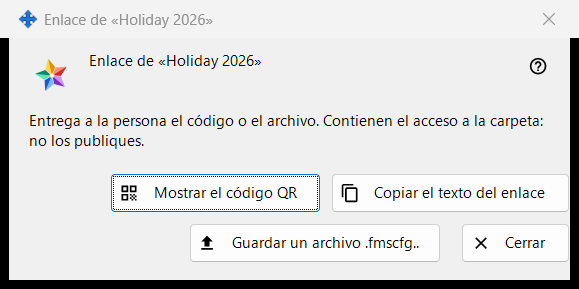
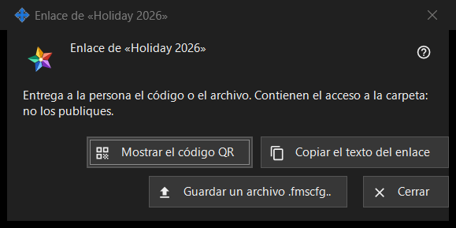

Enlace para una carpeta
Para qué sirve
Entrega una carpeta publicada a una persona que no tiene cuenta en el servidor de intercambio: como código QR, como texto del enlace y como archivo .fmscfg. Se abre después de «Crear un enlace..» o «Nuevo enlace..» en el grupo «Mis carpetas compartidas en la cuenta de intercambio» y con «Mostrar QR / Código..» en la ventana «Dar acceso externo..» de una carpeta. En el programa actual ambos comandos están desactivados, porque no se ofrece acceso a personas ajenas a la cuenta; esta página describe lo que muestra la ventana cuando existe un enlace.


En este orden
- Selecciona una carpeta publicada y pulsa «Crear un enlace..» (o «Nuevo enlace..» para sustituir uno antiguo).
- Lee el aviso de la parte superior.
- Entrega el enlace con «Mostrar el código QR», «Copiar el texto del enlace» o «Guardar un archivo .fmscfg..».
- Pulsa «Cerrar».
Los elementos
Cuándo está disponible la ventana
La ventana solo existe para un enlace recién creado o ya existente. Mientras no se ofrezca acceso a personas ajenas a la cuenta, «Crear un enlace..» y «Nuevo enlace..» están desactivados, un aviso debajo indica el motivo y la ventana no se abre; «Mostrar QR / Código..» también está desactivado. «Eliminar el enlace» sigue disponible.
El aviso de la parte superior
«Entrega a la persona el código o el archivo. Contienen el acceso a la carpeta: no los publiques.» Quien tenga el código QR, el texto del enlace o el archivo puede abrir esa carpeta. El texto del enlace nunca se muestra en pantalla.
Mostrar el código QR
Abre la imagen del código QR en una ventana de ampliación. El botón solo aparece si se pudo crear un código QR; a un texto del enlace demasiado grande para un código QR se responde con «El código es demasiado grande para un código QR: usa el archivo.».
Copiar el texto del enlace
Pone el texto del enlace (empieza por FMSSFTP2:) en el portapapeles por una vía protegida que lo mantiene fuera del historial del portapapeles de Windows y del portapapeles en la nube, y responde «Texto del enlace copiado.». Solo aparece si el enlace tiene texto.
Guardar un archivo .fmscfg..
Guarda un archivo de configuración para esta única carpeta, que solo puede leer su propietario. La ventana informa «Archivo guardado:» con la ruta, o «No se pudo guardar el archivo.». Solo aparece si se pudo crear el archivo.
Nuevo enlace y Eliminar el enlace
Ambos pertenecen al grupo, no a esta ventana, y ambos preguntan primero, con «No» como respuesta predeterminada: «Nuevo enlace..» avisa de que todos los códigos QR y archivos anteriores dejarán de funcionar, «Eliminar el enlace» de que dejarán de funcionar todos los códigos QR y archivos entregados con él.
Cerrar
Cierra la ventana y descarta de ella el texto del enlace, el contenido del archivo y la imagen del código QR.
Ajustes del gestor · Ajustes de uso compartido SFTP · Ajustes del servidor de intercambio